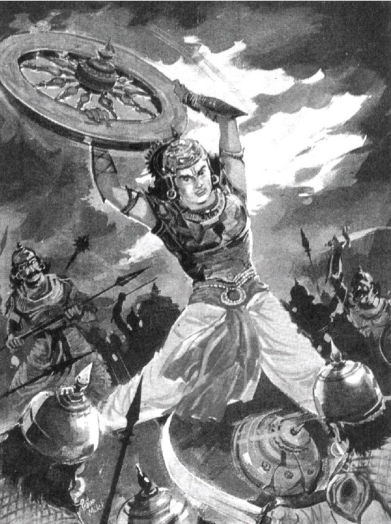

সরল ভাবার্থ
বিক্রমশালী যুধামন্যু, বলবান উত্তমৌজা, সুভদ্রাপুত্র অভিমন্যু এবং দ্রৌপদীর পাঁচ পুত্র—এঁরা সকলেই দুর্ধর্ষ মহারথী।
বিস্তারিত ধর্মীয় ব্যাখ্যা
দুর্যোধন এখন পাণ্ডব বংশের তরুণ ও নবীন প্রজন্মের বীরদের কথা বলছেন। সুভদ্রাপুত্র অভিমন্যু ছিলেন স্বয়ং শ্রীকৃষ্ণের ভাগ্নে এবং অর্জুনের যোগ্য উত্তরসূরি। তাঁর কথা বলতে গিয়ে দুর্যোধনের কণ্ঠস্বর নিশ্চয়ই কিছুটা কেঁপেছিল, কারণ অভিমন্যু একাই এক অক্ষৌহিণী সৈন্য ধ্বংস করার ক্ষমতা রাখতেন। দ্রৌপদীর পাঁচ পুত্র (প্রতিবিন্ধ্য, সুতসোম, শ্রুতকর্মা, শতানীক ও শ্রুতসেন) ধর্মের রক্ষার জন্য প্রাণ বিসর্জন দিতে কুণ্ঠাবোধ করেননি।
এই শ্লোকে 'মহারথঃ' শব্দটি অত্যন্ত গুরুত্বপূর্ণ। মহারথী হলেন সেই যোদ্ধা যিনি একাকী দশ হাজার ধনুর্ধরের সাথে যুদ্ধ করতে পারেন। দুর্যোধন স্বীকার করছেন যে পাণ্ডব পক্ষের ছোট-বড় সকল যোদ্ধাই মহারথী। ধর্মীয় দৃষ্টিতে এটি বংশপরম্পরায় ধর্মের প্রবহমানতা। পাণ্ডবরা কেবল নিজেরা ধার্মিক ছিলেন না, তারা তাদের সন্তানদেরও আদর্শবান বীর হিসেবে গড়ে তুলেছিলেন। অন্যদিকে দুর্যোধনের পক্ষে সংখ্যা বেশি থাকলেও তারা ছিল মোহের বশবর্তী। জীবনের যুদ্ধে কেবল বীরত্ব থাকলেই হয় না, তার সাথে দরকার সঠিক মূল্যবোধ। অভিমন্যু বা দ্রৌপদীর পুত্রদের নাম উল্লেখ করে দুর্যোধন আসলে নিজের পক্ষের অসারতাই প্রমাণ করছেন। তিনি দেখছেন যে অর্জুনের ছেলে অভিমন্যু যে শৌর্য দেখাচ্ছেন, তা তাঁর নিজের পুত্র লক্ষ্মণের মধ্যে নেই। এটিই হলো সত্যের শক্তি—যা পরবর্তী প্রজন্মকেও তেজস্বী করে তোলে। দুর্যোধনের এই ভীতিই গীতার শুরুর দিকের পরিবেশকে আরও গম্ভীর করে তুলেছে।

[ছবি: তেজস্বী যুবক অভিমন্যু এবং দ্রৌপদীর পঞ্চপুত্র রথে চড়ে তলোয়ার ও ধনুক নিয়ে যুদ্ধের জন্য সুসজ্জিত হয়ে আছেন।]